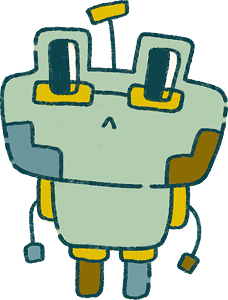
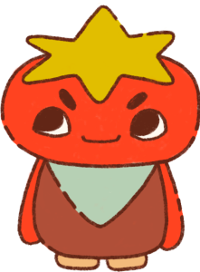
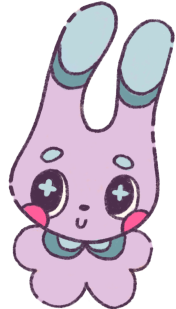
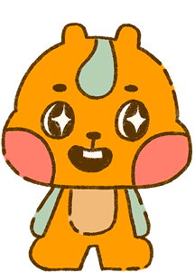

You like structure, clarity, and doing things properly. While others jump into ideas quickly, you’re thinking about the details, the plan, and what could go wrong. You make sure the group’s work is organized and high quality.
You’re usually the one pushing the group forward when things stall. When everyone is still discussing ideas, you’re already thinking about what needs to get done and how to start. You’re comfortable making quick decisions and stepping up when no one else does.


You’re the person making sure everyone feels heard. You notice when someone is being left out or when tensions start rising, and you help bring the group back together. You value cooperation and keeping things running smoothly.
You’re usually the one pushing the group forward when things stall. When everyone is still discussing ideas, you’re already thinking about what needs to get done and how to start. You’re comfortable making quick decisions and stepping up when no one else does.
